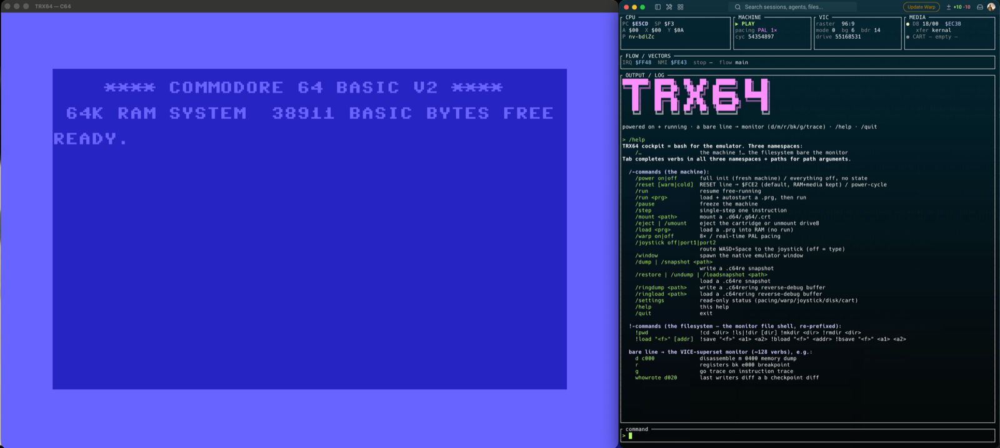
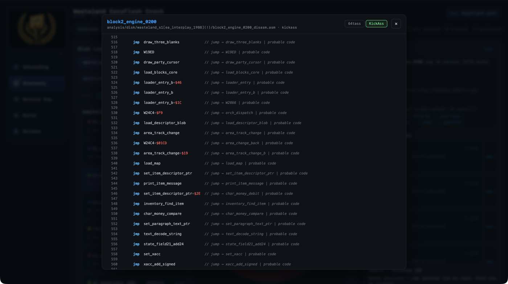
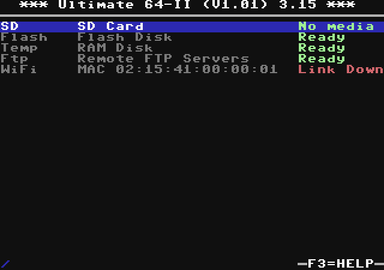

Understand / C64RE
Bytes become knowledge.
Disassembly, findings, and a knowledge graph — backed by a byte-identical rebuild.
TREX64 · C64 Reverse Engineering & Development
TRX64 runs the machine and rewinds time. C64RE turns bytes into evidence-backed knowledge. The C64U / UE2 Emulator builds a complete Ultimate system around it — with UCI, turbo modes, drives, cartridges, and unmodified firmware.
Understand / C64RE
Disassembly, findings, and a knowledge graph — backed by a byte-identical rebuild.
System / C64U + UE2 Emulator
Firmware and board model around TRX64: UCI, turbo, storage, network, video, and audio.
Runtime foundation / TRX64
A cycle-accurate C64 with 1541 and 1581 — headless, reversible, and fully controllable.
Each product has one clear job. Together they cover the path from the first clue in a binary to a complete, automatable Ultimate system.

01 · Runtime / TRX64
A cycle-accurate, headless C64, 1541, and 1581 runtime in Rust — controlled by humans, scripts, and agents.
whowrote, and JAM triage
02 · Knowledge / C64RE
The MCP-based workbench turns PRGs, cartridges, and disk images into explained, named source that rebuilds byte for byte.

03 · System emulator / C64U + UE2
Unmodified Ultimate firmware, modeled board hardware, and the complete TRX64 machine form one interactive, automatable system.
The runtime reveals behavior. The workbench turns it into verifiable knowledge. The system emulator places the same machine inside the full Ultimate context.
Start original media or a complete Ultimate system under full control.
Go back to the write, jump, or crash and isolate its cause.
Name structures, connect findings, and keep uncertainty visible.
Rebuild source byte for byte or test full-system behavior automatically.
03 / Architecture
TREX64 is not a monolith. C64RE preserves meaning and evidence. The C64U / UE2 Emulator models the firmware and Ultimate board. TRX64 provides the same precise, complete C64 machine to both.
ROMs, firmware, and commercial media are intentionally not included. Supply them from your own legally obtained sources.
TRX64 / macOS
Install the CLI cockpit and native emulator window.
C64RE / source
Run the workbench, MCP server, and UI from source.
C64U / UE2 · macOS
Install the Ultimate system emulator, then attach your local firmware and ROMs.